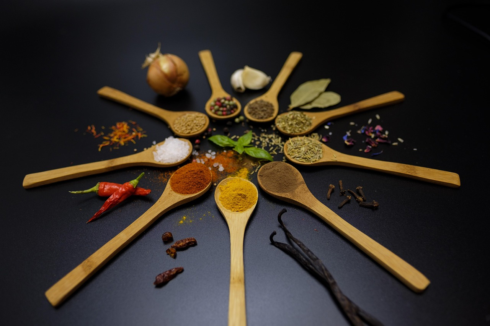

Sobre nosotros

Somos una pareja de emprendedores que nos reconvertimos para dar el salto
del mundo financiero de la gran ciudad, a la calidad de vida del rural aportando
un toque distinto a la oferta gastronómica de la zona tras unos años formándonos
en varias escuelas de cocina.
Nuestra oferta gastro
Los productos de nuestro menú son todos de kilómetro 0, provenientes de nuestra propia huerta y de los agricultores y ganaderos de la comarca.


La cerveza es de producción artesanal de nuestros proveedores locales.
Menú degustación

Nuestro menú degustación consiste en un pase de 5 platillos y postre.
Lo variamos cada mes según el producto.
Reserva tu menú degustación en este enlace: